워드프로세서-(구-1급) (2004-08-29 기출문제)
1과목: 워드프로세싱 일반
1. 다음 중 커서를 한 단어씩 이동시키려면 어떤 키를 눌러야 하는가?
- alt + 방향키
- ctrl + 방향키
- shift + 방향키
- tab키
(정답률: 82%)

2. 다음은 워드프로세서에 사용되는 글꼴에 대한 설명이다. 아웃라인(Outline) 방식에 대한 설명으로 옳지 않은 것은?
- 폰트를 점으로 설계하고 제작하였으며, 화면에 표시된 점의 수와 출력된 글자를 구성하는 점의 수가 같다.
- 글꼴을 확대해도 테두리가 거칠게 나타나지 않아 고해상도의 출력물을 얻을 수 있다.
- 외곽선 글꼴이라고도 한다.
- 트루타입 글꼴, 벡터 글꼴, 포스트스크립트 글꼴이 대표적이다.
(정답률: 73%)
3. 다음 보기 중 각 기능과 명령이 바르게 연결된 것을 고르시오.
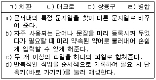
- ㄱ) - b)
- ㄴ) - d)
- ㄷ) - c)
- ㄹ) - a)
(정답률: 93%)
4. 다음 중 스풀링(Spooling)에 대한 설명으로 옳지 않은 것은?
- 인쇄물을 보조기억장치에 저장했다가 인쇄한다.
- 인쇄 중에 또 다른 문서를 불러들여 편집할 수 있다.
- 프린터의 인쇄 속도를 향상시킨다.
- CPU의 효율적인 사용을 가능하게 한다.
(정답률: 79%)
5. 문서 분량이 같은 파일을 블록 복사, 블록 이동, 블록 삭제 기능을 이용하여 각각 작업한 후 변화한 문서 분량이 큰 문서에서 작은 문서의 순서로 바르게 나열한 것은?
- 블록 복사 > 블록 이동 > 블록 삭제
- 블록 복사 > 블록 삭제 > 블록 이동
- 블록 이동 > 블록 복사 > 블록 삭제
- 블록 이동 > 블록 삭제 > 블록 복사
(정답률: 84%)
6. 다음 중 유니코드(KS X 10⑤-1)에 대한 설명으로 옳은 것은?
- 영문과 공백은 1바이트, 한글과 한자는 2바이트로 처리한다.
- '必勝 KOREA'라는 말을 입력할 경우 최소 16바이트의 기억 공간이 필요하다.
- 정보 교환시 제어 문자와 충돌이 발생할 가능성이 크다.
- 조합형 한글 코드에 비해 적은 기억 공간을 사용한다.
(정답률: 90%)
7. 다음 중 기억장치에 대한 설명으로 옳지 않은 것은?
- 기억장치는 처리 속도와 사용 용도, 기억 용량의 크기 등에 따라 캐시기억장치, 주기억장치, 보조기억장치 등으로 나누어진다.
- 주기억장치는 프로그램 기억 장소, 입력 데이터 기억 장소, 작업 장소 및 출력 데이터 기억 장소로 구성되며, 내부기억장치라고도 한다.
- 주기억장치는 중앙처리장치(CPU)보다 실행 속도가 늦기 때문에 이를 보완하기 위해 개발된 것이 플래시메모리(Flash Memory)이다.
- 보조기억장치는 주기억장치에 있는 프로그램이나 데이터를 별도의 기억장치에 기억시켜 두었다가 필요할 때에 사용한다.
(정답률: 88%)
8. 다음 중 편지 병합(Mail Merge)에 대한 설명으로 옳지 않은 것은?
- 전체적인 내용은 동일하지만 수신인과 같이 특정 부분만 다른 여러 개의 문서를 만드는 경우에 적절하다.
- 외부 파일에 존재하는 데이터를 이용하여 작성할 수도 있다.
- 병합 문서를 만들면서 동시에 전자우편(E-Mail)으로 발송해 준다.
- 병합된 편지는 직접 인쇄하거나 파일로 만들 수 있다.
(정답률: 75%)
9. 다음 중 인쇄 기능에 대한 설명으로 옳지 않은 것은?
- 모든 프린터는 고유한 프린터 드라이버를 가지고 있다.
- 피치(Pitch)가 클수록 문자와 문자사이의 간격이 넓게 인쇄된다.
- 프린터의 해상도를 나타내는 단위는 DPI이다.
- 레이저 프린터의 인쇄 속도의 단위는 PPM을 사용한다.
(정답률: 78%)
10. 다음 중 한자 입력 방법에 대한 설명으로 옳지 않은 것은?
- 한자는 그 수가 너무 많아 키보드에 할당되어 있지 않으므로 음절 또는 단어 단위 등으로 입력한다.
- 문장 단위로 한글을 한자로 변환시키기 위해서는 문장을 입력한 후 [한자] 키를 누르면 자동으로 문장 전체가 한자로 전환된다.
- 한자는 KS X 1001코드에서 사용하는 4,888자를 주로 사용한다.
- 음을 아는 한자의 입력 방법으로는 음절단위 변환, 단어단위 변환 등이 있다.
(정답률: 82%)
11. 다음 보기의 내용처럼 특정 단어들에 대해 특정 서식<기울임(이탤릭), 밑줄, 진하게>을 반복하여 적용하고자 할 때 가장 효과적인 방법은?
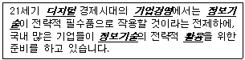
- 상용구(Glossary)
- 매크로(Macro)
- 문단 모양
- 하이퍼텍스트(Hypertext)
(정답률: 80%)
12. 다음 중 하이퍼텍스트(Hypertext)에 대한 설명으로 옳지 않은 것은?
- 서로 연관된 문서를 계층적으로 연결한다.
- 문서의 특정 단어나 문장에 대한 부가설명이 필요할 때 사용하는 것으로 주로 문서의 하단에 표시된다.
- 주로 인터넷의 문서나 Windows 도움말에 사용된다.
- 문서 내의 특정한 단어를 선택하면 그 단어와 연결된 문서의 위치로 이동한다.
(정답률: 77%)
13. 다음 보기의 DRAM을 개발된 순서대로 올바르게 나열한 것은?
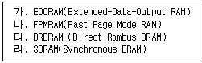
- 가 → 나 → 다 → 라
- 나 → 가 → 라 → 다
- 라 → 다 → 나 → 가
- 다 → 가 → 라 → 나
(정답률: 76%)
14. 다음과 같이 수정되었을 때 사용된 교정부호를 순서대로 올바르게 나열한 것은?
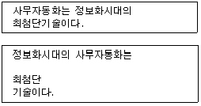
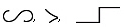
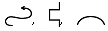
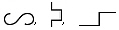
(정답률: 92%)
15. 다음 중에서 문서의 분량이 증가할 가능성이 있는 교정부호들로 올바르게 나열된 것은?
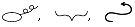
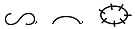
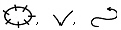
(정답률: 93%)
16. 특정 워드프로세서로 만든 문서를 다른 워드프로세서를 이용하여 읽거나 출력하려고 할 때 원래의 문서와 가장 가까운 형태로 변환하려면 어떤 형식으로 저장하는 것이 좋은가?
- 일반 텍스트 파일(*.txt)
- HTML 문서(*.html)
- 서식있는 문자열(*.rtf)
- 문서 서식 파일(*.dot)
(정답률: 85%)
17. 다음 중 전자출판에서 제한된 색상을 이용하여 복잡한 색을 구현해 내는 기법은?
- 커닝(Kerning)
- 오버프린트(Overprint)
- 리터칭(Retouching)
- 디더링(Dithering)
(정답률: 82%)
18. 다음 중에서 캐시 메모리(Cache Memory)에 관한 설명으로 옳지 않은 것은?
- 데이터의 손실이나 훼손에 대비하여 프로그램 또는 데이터 파일을 복사해 놓는 저장장소이다.
- 중앙처리장치와 주기억장치 사이에서 실행속도를 높이기 위해 사용된다.
- 접근속도는 빠르나 값이 비싼 단점이 있다.
- 캐시 메모리는 주로 SRAM으로 만들어진다.
(정답률: 73%)
19. 다음의 내용은 공고 문서에 대하여 설명한 것으로 ( )안에 들어갈 적당한 용어를 순서대로 올바르게 나열한 것은?
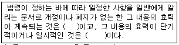
- 지시, 공고
- 공고, 고시
- 고시, 지시
- 고시, 공고
(정답률: 78%)
20. 업무협조 요청을 받은 기관이 협조요청 문서에 흠이 있음을 발견한 때에는 접수한 날부터 몇 일 이내에 보완을 요구하여야 하는가?(2008년도 사무관리규정 개정으로 제외된 문제 입니다. 정답은 3번이었습니다. 3번을 체크하시면 정답 처리 됩니다.)
- 1일
- 2일
- 3일
- 5일
(정답률: 87%)
2과목: PC 운영 체제
21. 다음 중 한글 Windows 98의 [제어판]에 있는 [암호]와 관련된 설명으로 옳지 않은 것은?
- 한 대의 PC를 여러 사람이 사용할 경우에 사용자 초기화 파일을 이용하여 암호를 지정하고 각각 다른 작업 환경을 설정할 수 있다.
- 입력된 암호는 C:\Windows\System 폴더에 사용자 이름의 파일명과 '.pwl'의 확장자를 갖는 파일로 저장된다.
- [암호 등록정보] 창의 [사용자 초기화 파일] 탭에서 '사용자마다 다른 기본 설정 및 바탕화면 사용' 옵션을 이용하면 사용자마다 바탕 화면의 모양과 기본 설정 사항을 다르게 할 수 있다.
- 부팅할 때 나타나는 [네트워크 암호] 대화상자에 입력할 암호를 잊은 경우에 [Esc] 키를 누르면 Windows로 바로 부팅이 된다. 이 때 암호 파일(*.pwl)을 찾아 삭제하면 다음 Windows를 부팅할 때 새롭게 암호를 등록할 수 있다.
(정답률: 61%)
22. 다음의 보기 그림은 한글 Windows 98의 [네트워크 드라이브 연결] 대화상자 창이다. 이 그림의 대화상자에 관한 설명으로 옳지 않는 것은?
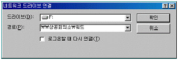
- [탐색기] 창의 [도구] 메뉴에서 [네트워크 드라이브 연결]을 선택하면 나타난다.
- 바탕화면의 [네트워크 환경]의 바로 가기 메뉴에서 [네트워크 드라이브 연결]을 선택하면 나타난다.
- 바탕화면의 [네트워크 환경]을 더블 클릭하여 나타난 창의 [이동]메뉴에 주소록을 선택하면 나타난다.
- 보기 그림과 같이 설정되어 있으면 내 컴퓨터나 윈도우 탐색기에 F: 드라이브가 생성되고 이를 클릭하면 네트워크상에 상공회의소라는 이름의 컴퓨터에 있는 워드라는 폴더에 연결된다.
(정답률: 59%)
23. 한글 Windows 98에서 사용하는 폴더나 파일에 관한 설명으로 옳지 않은 것은?
- 탐색기에서 임의의 폴더를 플로피 디스크에 복사하려면 해당 폴더를 선택한 후에 [파일] 메뉴의 [보내기]에서 [3.5 플로피]를 선택한다
- 공유된 폴더는 다른 디스크로 복사 될 수 없고, 이동만 가능하다.
- 파일을 복사하려면 [편집] 메뉴의 [복사]를 이용하고, 다른 위치로 이동시키려면 [편집] 메뉴의 [잘라내기]를 일반적으로 이용한다.
- 두 개 이상의 폴더나 파일을 선택할 경우에는 <Ctrl>키를 누른 상태로 원하는 항목을 하나씩 클릭한다.
(정답률: 73%)
24. 다음 한글 Windows 98의 [시스템 도구]에 있는 [디스크 검사] 프로그램의 기능에 관한 설명으로 옳지 않은 것은?
- [디스크 검사] 창에서 검사할 디스크를 선택하고 [시작] 버튼을 누르면 실행된다.
- 오류가 발생한 파일 조각에 대한 복구 기능을 전혀 제공하지 않는다.
- 검사 유형으로는 [표준 검사]와 [정밀 검사]가 있다.
- 여러 드라이브를 한번에 검사하고자 할 경우에는 드라이브 선택 창에서 [Shift]키나 [Ctrl]키를 마우스 버튼과 함께 사용하여 선택하면 된다.
(정답률: 77%)
25. 다음 중 한글 Windows 98의 [휴지통]에 관한 설명으로 옳은 것은?
- 휴지통의 내용은 일정시간이 지나면 자동으로 지워지게 된다.
- 폴더나 파일을 삭제할 때 확인 메세지를 표시되지 않게 설정할 수 있다.
- 휴지통의 크기는 윈도 운영체제에서 자동으로 설정되어 변경할 수 없다.
- [Shift]+[Del] 키를 사용하면 삭제된 파일과 폴더를 휴지통에서 복원할 수 있다.
(정답률: 62%)
26. 한글 Windows 98에서 엑티브 데스크톱 기능을 사용할 때의 장점이 아닌 것은?
- 바탕화면에 밑줄이 그어진 아이콘은 1회 클릭으로 삭제할 수 있다.
- 사용자는 웹 요소를 바탕화면 요소로 전환할 수 있으며, 언제라도 업데이트할 수 있다.
- 웹과 바탕 화면을 통합하여 사용자가 바탕 화면을 정의하고, 프로그램을 시작할 수 있다.
- 웹과 바탕 화면을 통합하여 사용자가 최신의 국제 뉴스를 볼 수 있다.
(정답률: 64%)
27. 다음 중 한글 Windows 98에서 [보조 프로그램]의 [엔터테인먼트]에 있는 [CD 재생기]에 대한 설명으로 옳지 않은 것은?
- [제어판]-[시스템]의 [장치 관리자]탭에서 해당 CD-ROM을 선택한 다음 [등록 정보]-[설정] 탭에서 '자동 삽입 통지'를 체크하지 않으면 자동 실행을 해제할 수 있다.
- CD-ROM에 연결된 헤드폰을 사용하거나, 사운드 카드가 있을 경우 스피커를 통해 소리를 들을 수 있다.
- 작업 표시줄의 트레이 영역에 스피커 아이콘이 없는 경우에는 [제어판]-[디스플레이]의 [오디오]탭에서 '작업 표시줄에 볼륨 조절 표시' 확인란을 선택하면 된다.
- 오디오 CD를 넣을 때 자동으로 CD 재생기가 실행되는 것을 막으려면 [Shift]키를 누른 상태에서 CD를 넣는다.
(정답률: 54%)
28. 다음은 한글 Windows 98의 부팅 단계의 일부분이다. 부팅 순서에 맞게 나열된 것은?
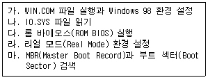
- 다-마-나-라-가
- 마-다-나-라-가
- 다-마-라-나-가
- 다-나-마-라-가
(정답률: 54%)
29. 한글 Windows 98에서는 도움말 기능을 제공한다. 다음 중 도움말의 설명으로 바르지 못한 것은?
- 검색 방법은 목차와 색인 그리고 검색으로 나뉘어져 있다.
- 도움말의 내용을 보여주는 창에 있는 옵션 메뉴에서는 글꼴의 크기를 변경 할 수 있다.
- 대화 상자의 제목 표시줄에 물음표 단추가 있다면 그것을 누른 다음 대화 상자에 있는 항목을 눌러서 각 항목에 관한 [도움말]을 볼 수 있다.
- 프로그램에서 도움말 메뉴가 있다면 선택하여 언제든지 도움말을 참조할 수 있다.
(정답률: 69%)
30. 한글 Windows 98에서 [시작] 메뉴의 [문서]에 나타나는 파일 목록에 대한 설명으로 옳지 않은 것은?
- 가장 최근에 사용했던 파일이 문서 목록에 나타난다.
- 문서 파일을 선택하여 클릭하면 곧바로 문서를 열어 사용할 수 있다.
- 기본적으로 탐색기나 내 컴퓨터를 통해 열었던 문서만 이 목록에 추가된다.
- 문서 목록은 [작업 표시줄 등록정보] 창의 [시작 메뉴 프로그램] 탭에서 삭제할 수 있다.
(정답률: 67%)
31. 한글 Windows 98에서 [제어판]의 [시스템]을 선택한 후에 [장치 관리자] 탭에서 할 수 있는 작업은?
- 응용 프로그램 추가
- 하드웨어 제거
- 시동 디스크 작성
- Windows 구성 요소 설치
(정답률: 52%)
32. 다음 중 한글 Windows 98의 문서 편집기인 [메모장]에서 사용할 수 없는 기능은?
- 글자 색상 지정과 글꼴의 크기 설정
- 머리글과 바닥글 작성
- 시스템의 날짜와 시간을 [편집] 메뉴에서 바로 입력
- 출력 용지 및 여백 설정
(정답률: 72%)
33. 다음 중 한글 Windows 98에서 네트워크와 관련하여 사용되는 프로그램에 대한 설명으로 옳지 않은 것은?
- ping : 시스템의 네트워크 연결 상태 여부를 확인할 수 있다.
- ipconfig : 네트워크 설정 정보를 변경할 수 있다.
- ftp : 다른 컴퓨터에 파일을 전송할 수 있다.
- winipcfg : 네트워크 설정 정보를 확인할 수 있다.
(정답률: 67%)
34. 한글 Windows 98에서 문제 해결방법에 관한 설명으로 가장 옳지 않은 것은?
- [메모리 부족]일 경우에는 가상 메모리를 충분히 확보할 수 있도록 휴지통, 임시파일, 사용하지 않는 프로그램 등을 삭제한다.
- [디스크 공간 부족]일 경우에는 열려진 프로그램이나 문서 중 불필요한 것을 종료한다.
- [정상적인 부팅이 안되는 경우]에는 안전모드로 부팅하여 문제 해결후 정상모드로 재부팅한다.
- [시스템 속도 문제]일 경우에는 디스크 조각 모음을 하여 하드 디스크의 단편화를 제거한다.
(정답률: 65%)
35. 다음 중 한글 Windows 98에서 사용하는 네트워크의 [TCP/IP 등록 정보] 창에서 설정할 수 없는 것은?
- IP 주소 정보의 설정
- 인터넷 브라우저 정보의 설정
- 게이트웨이 정보의 설정
- DNS 정보의 설정
(정답률: 59%)
36. 다음 중 한글 Windows 98에서 파일과 폴더 관리에 대한 설명으로 옳지 않은 것은?
- 폴더 내에서 파일이나 하위 폴더의 이름을 바꿀 때는 항목을 선택한 후, 주메뉴의 [파일]-[이름 바꾸기]를 선택한다.
- [복사] 또는 [이동]할 때 파일, 그래픽, 소리 등의 데이터가 잠시 기억되는 임시 기억장소를 '클립보드'라고 한다.
- 마우스로 드래그하여 복사할 때에는 마우스 포인터의 오른쪽 아래에
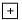
표시가 나타난다. - 휴지통의 용량이 꽉 찬 경우 새로운 파일을 삭제하면 용량이 가장 큰 파일부터 삭제가 되면서 휴지통에 새로 삭제된 파일이 보관된다.
(정답률: 65%)
37. 한글 Windows 98에서 도움말 기능을 사용할 때 하위 도움말 항목을 가지고 있는 것을 표시하는 아이콘은?
(정답률: 60%)
38. 한글 windows 98에서 시작 메뉴의 [찾기]에 나타나는 부메뉴의 항목이 아닌 것은?
- 파일 또는 폴더
- 컴퓨터
- 인터넷
- 액티브 데스크톱
(정답률: 66%)
39. 한글 Windows 98에서 다른 컴퓨터에 연결되어 있는 프린터를 네트워크로 연결하여 사용하려고 할 경우에 설명이 옳지 않은 것은?
- 프린터의 공유이름을 알아야 한다.
- 프린터가 연결되어 있는 컴퓨터명을 알아야 한다.
- 프린터 연결 포트는 반드시 COM1 포트를 사용하여야 한다.
- [제어판]-[프린터] 창에서 설정할 수 있다.
(정답률: 73%)
40. 한글 Windows 98의 바탕 화면에서 아이콘과 아이콘 사이의 간격을 줄이려고 할 때 사용하는 방법으로 옳게 설명한 것은?
- [제어판] - [디스플레이] - [화면배색]에서 항목 란의 아이콘 간격(수직)과 아이콘 간격(수평)을 선택한 후에 크기 값을 줄인다.
- [제어판] - [시스템] - [장치관리자] - [모니터]의 단축메뉴에서 아이콘 간격을 선택한 후에 크기 값을 줄인다.
- [제어판] - [디스플레이] - [설정] - [고급]에서 아이콘 항목 옆의 숫자 값을 줄인 후 적용을 선택한다.
- [제어판] - [바탕 화면테마] - [포인터 사운드] 등을 선택한 후 화면 탭에서 내 컴퓨터 아이콘을 선택하여 숫자 값을 줄인다.
(정답률: 57%)
3과목: 컴퓨터 및 정보활용
41. 기존 응용 프로그램의 오류 수정이나 성능 향상을 위해 프로그램의 일부 파일을 변경해 주는 프로그램을 무엇이라고 하는가?
- 링킹 프로그램(Linking Program)
- 패치 프로그램(Patch Program)
- 응용 프로그램(Application Program)
- 채팅 프로그램(Chatting Program)
(정답률: 89%)
42. 다음 중 동영상을 담고 있는 파일 형식으로 옳지 않은 것은?
- divx
- avi
- asf
- tiff
(정답률: 74%)
43. 스캐너를 이용하여 받아들인 이미지 형태의 문서를 이미지 분석과정을 통하여 문자 형태의 문서로 바꾸어 주는 소프트웨어를 무엇이라 하는가?
- OMR 소프트웨어
- Retouching 소프트웨어
- 이미지 편집 소프트웨어
- OCR 소프트웨어
(정답률: 64%)
44. 회사원 K씨는 인터넷에서 소프트웨어를 다운 받아 사용하던 중, 한달 후에 프로그램을 실행시키자 대가를 지불하고 소프트웨어를 사용하라는 메시지가 나왔다. K씨가 사용한 소프트웨어는 다음 중 무엇에 해당하는가?
- 데모 프로그램(Demo Program)
- 프리웨어(freeware)
- 쉐어웨어(Shareware)
- 상용 소프트웨어
(정답률: 76%)
45. 다음 중 RISC 컴퓨터의 특성으로 옳지 않은 것은?
- 주소지정방식을 최소화하여 제어장치가 간단하다.
- 명령어의 수가 많고 길이가 가변적이다.
- 고정배선제어이므로 마이크로프로그램 방식보다 빠르다.
- 자주 사용되는 명령어만을 둠으로써 시스템이 빠르다.
(정답률: 68%)
46. 다음 중 펌웨어(Firm Ware)에 관한 설명으로 옳지 않은 것은?
- 하드웨어와 소프트웨어의 중간적 성격을 갖고 있다.
- 하드웨어의 기능을 추가하거나 변경을 할 수 없다.
- ROM에 저장되는 마이크로 컴퓨터 프로그램이 이에 속한다.
- 디지털 시스템에서 널리 이용된다.
(정답률: 66%)
47. 다음 중 주기억장치와 입·출력 장치간의 속도 차이를 줄일 목적으로 사용하는 것으로, CPU로부터 입·출력 장치의 제어를 위임받아 한번에 여러 데이터 블록을 입·출력할 수 있는 시스템 하드웨어 구성요소는 어느 것인가?
- DMA(Direct Memory Access)
- 채널(Channel)
- AGP(Accelerated Graphics Port)
- 버퍼(Buffer)
(정답률: 72%)
48. 다음 보기에서 설명하는 특성들을 갖는 통신망의 구성 요소는 어느 것인가?
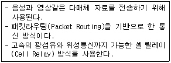
- ADSL(Asymmetric Digital Subscriber Line)
- PSTN(Public Switched Telephone Network)
- ATM(Asynchronous Transfer Mode)
- CSDN(Circuit Switched Data Network)
(정답률: 74%)
49. 다음 중 통신망의 종류와 특징에 대한 설명으로 옳지 않은 것은?
- LAN - 제한된 지역내에 있는 독립된 컴퓨터 기기들로 하여금 서로 통신이 가능하도록 하는 데이터 통신 시스템이다.
- MAN - 도시 전체를 대상으로 구축하는 네트워크이다.
- WAN - 데이터, 음성, 영상 정보의 단거리 전송 서비스를 제공하는 네트워크이다.
- ISDN - 기존의 전화 교환망에 디지털 기능을 추가하여 새로운 통신 서비스를 제공하는 네트워크이다.
(정답률: 66%)
50. 압축 방식 중에서 QuickTime의 설명으로 옳지 않은 것은?
- JPEG를 기본으로 한 압축 방식이다.
- 아날로그, 디지털 변환을 VC(Video Capture)보드로 수행한다.
- QuickTime은 Movie Toolbox, Image Compression Manager, Component Manager로 구성되어 있다.
- 정지 화상만을 압축하는 방식이다.
(정답률: 73%)
51. 다음 중 PC를 업그레이드 할 때 고려할 사항으로 옳지 않은 것은?
- RAM의 경우 속도 단위인 ns가 큰 것이 좋다.
- 하드디스크의 경우 저장 용량인 GB가 큰 것이 좋다.
- CPU의 경우 속도 단위인 Hz가 큰 것이 좋다.
- CD-ROM의 경우 속도 단위인 배속이 큰 것이 좋다.
(정답률: 63%)
52. 다음 중 데이터 통신 시스템에서 데이터 전송계를 구성하는 기본 요소들과 가장 거리가 먼 것은?
- 데이터 통신 시스템과 외부 환경과의 접속점에 위치하는 단말 장치
- 데이터 전송 회선과 단말 장치 사이에 위치하여 이들을 결합하기 위한 통신 제어 장치
- 데이터를 처리하는 중앙 처리 장치와 처리된 결과를 저장하는 출력 장치
- 단말 장치 상호간을 연결하여 주는 데이터 전송 회선
(정답률: 59%)
53. 다음 중 멀티미디어의 기본 조건과 가장 거리가 먼 것은?
- 텍스트, 이미지, 음성, 영상 등 다양한 정보를 동시에 표현할 수 있어야 한다.
- 상호작용을 할 수 있는 기능이 있어야 한다.
- 각 매체가 분산된 환경에서 운영되어야 한다.
- 디지털 정보를 제공할 수 있어야 한다.
(정답률: 72%)
54. 다음 중 제5세대 컴퓨터의 주요 특징에 해당하는 내용이 아닌 것은?
- 경영정보시스템(Management Information System)
- 인공지능(Artificial Intelligence)
- 전문가시스템(Expert System)
- 퍼지이론(Fuzzy Theory)
(정답률: 68%)
55. 다음 중에서 BIOS에 대한 설명으로 옳지 않은 것은?
- 컴퓨터를 켜면 BIOS에 저장된 Boot 프로그램이 시작되어 POST(Power on Self Test)를 행한다.
- 부팅 순서를 바꾸려면 BIOS 설정을 변경해 주어야 한다.
- 시스템 부팅시 입력해야 하는 암호를 잊어버리면 ROM BIOS를 교체해 주어야 한다.
- BIOS 설정을 통해 시간과 날짜를 변경할 수 있다.
(정답률: 66%)
56. 다음 중 보안 관련 용어에 대한 설명으로 옳지 않은 것은?
- 해킹이란 컴퓨터 시스템에 불법적으로 접근, 침투하여 시스템과 데이터를 파괴하는 행위이다.
- 웜(worm)이란 네트워크를 통해 연속적으로 자신을 복제하여 시스템의 부하를 높이는 바이러스의 일종이다.
- 디지털 서명이란 송신자의 신분을 보증하는 암호화된 데이터로서, 메시지에 덧붙여 보내기도 한다.
- 트로이 목마(Trojan Horse)란 외부(인터넷)으로부터의 침입을 막기 위하여 격리시키는 시스템이다.
(정답률: 79%)
57. 다음 중 송신자의 송신 여부와 수신자의 수신 여부를 확인하는 기능으로 송수신자가 송수신 사실을 부정하지 못하도록 하는 보안 기능을 무엇이라고 하는가?
- 인증
- 접근 통제
- 부인 방지
- 기밀성
(정답률: 83%)
58. 다음 MIDI 파일에 관한 설명 중 옳지 않은 것은?
- wav 파일에 비해 크기가 작다.
- MIDI 악기와 MIDI 사운드카드가 소리를 재생할 때 필요한 명령어가 저장되어 있다.
- 음악을 악보와 비슷한 하나의 순서(sequence)로 부호화하여 저장한다.
- 사람의 목소리도 재생된다.
(정답률: 78%)
59. 다음 중 산술 및 논리 연산의 결과를 일시적으로 기억하고 있는 것은?
- 명령 레지스터
- 프로그램 카운터
- 인덱스 레지스터
- 누산기
(정답률: 78%)
60. 다음 중 인터넷에서 메시지를 전송하는 데 사용되는 프로토콜과 그 역할에 대한 설명이다. ( )안에 들어갈 용어를 순서대로 올바르게 나열한 것은?
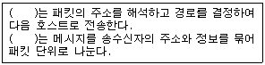
- TCP, IP
- IP, HTPP
- IP, TCP
- TCP, HTPP
(정답률: 62%)